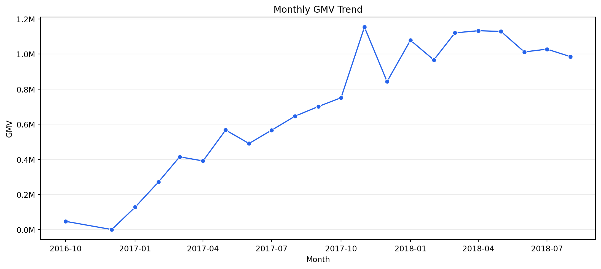
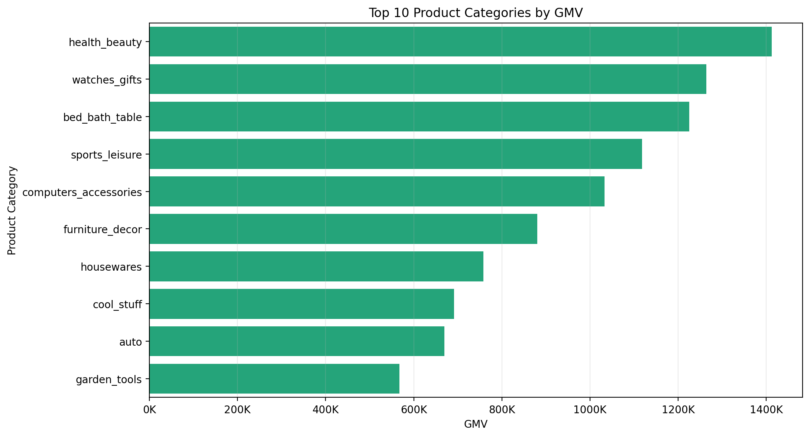
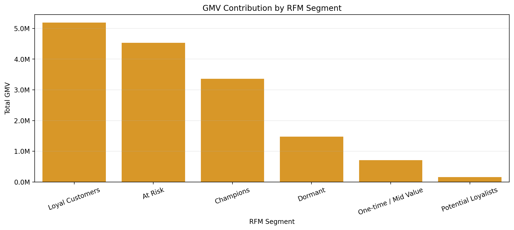
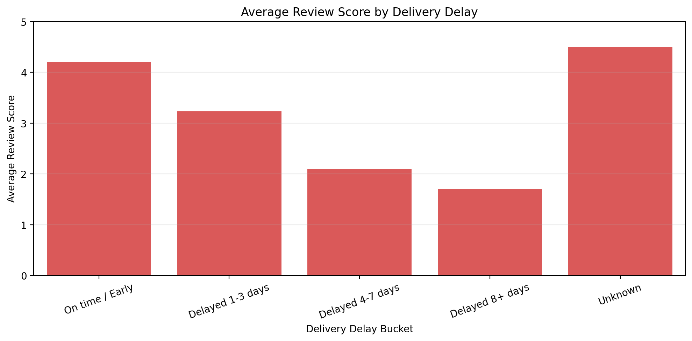
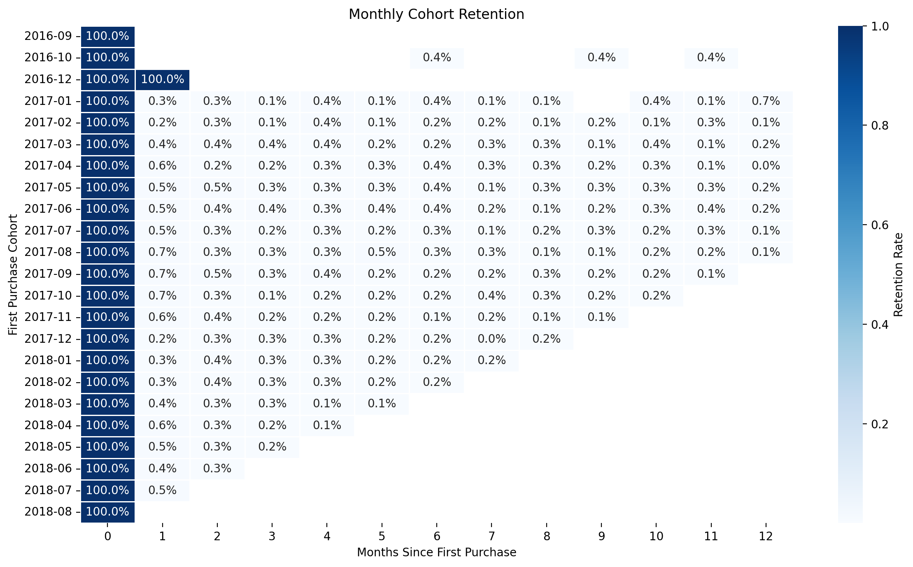

Revenue, Retention, and Experience Trends
Monthly GMV Trend

GMV grew strongly through 2017 and peaked around the year-end shopping period.
Top Product Categories by GMV

Revenue is concentrated in a small set of categories such as health_beauty, watches_gifts, and bed_bath_table.
GMV by RFM Segment

Loyal Customers, At Risk customers, and Champions drive the majority of customer value.
Review Score by Delivery Delay

On-time orders average 4.21 stars, while 8+ day delayed orders average 1.70 stars.
Cohort Retention Heatmap

Retention is weak after first purchase, highlighting a lifecycle activation opportunity.
Business Interpretation
GMV needs repeat-purchase lift
The marketplace has 93,358 purchasing customers but only 3.0% repeat customer rate. Growth should focus on converting first-time buyers into second purchases.
At Risk users are high-value
At Risk customers represent 4.53M historical GMV. A 5% win-back scenario is the largest modeled opportunity at 226.7K GMV.
Severe delays hurt trust
Orders delayed 8+ days have much lower review scores than on-time orders. Logistics improvements should focus on high-GMV categories and sellers with recurring delay risk.
Tables for Decision Making
Top Categories by GMV
| Product Category | Gmv | Orders | Aov | Avg Review Score |
|---|---|---|---|---|
| health_beauty | 1.41M | 8647 | 163 | 4.19 |
| watches_gifts | 1.26M | 5495 | 230 | 4.07 |
| bed_bath_table | 1.23M | 9272 | 132 | 3.92 |
| sports_leisure | 1.12M | 7530 | 149 | 4.17 |
| computers_accessories | 1.03M | 6530 | 158 | 3.99 |
| furniture_decor | 880.3K | 6307 | 140 | 3.95 |
| housewares | 758.4K | 5743 | 132 | 4.11 |
| cool_stuff | 691.7K | 3559 | 194 | 4.19 |
RFM Segment Summary
| Rfm Segment | Customers | Avg Recency Days | Avg Frequency | Avg Monetary | Total Gmv |
|---|---|---|---|---|---|
| Loyal Customers | 40531 | 142.71 | 1.02 | 128 | 5.19M |
| At Risk | 14775 | 392.52 | 1.07 | 307 | 4.53M |
| Champions | 10822 | 69.61 | 1.11 | 310 | 3.36M |
| Dormant | 20248 | 396.45 | 1.00 | 73 | 1.47M |
| One-time / Mid Value | 5827 | 308.65 | 1.00 | 122 | 712.1K |
| Potential Loyalists | 1155 | 6.47 | 1.00 | 135 | 156.2K |
Opportunity Sizing
| Scenario | Estimated Gmv Impact | Impact As Pct Of Total Gmv | Strategic Use |
|---|---|---|---|
| Win back 5% of At Risk customers | 226.7K | 1.5% | Retention campaign sizing |
| Increase month-1 retention by 1 percentage point | 149.2K | 1.0% | Lifecycle marketing target |
| Reduce all delayed order GMV by 10% | 115.1K | 0.7% | Logistics improvement target |
| Reduce 8+ day delayed order GMV by 20% | 104.7K | 0.7% | SLA and seller operations sizing |
| Win back 3% of Dormant customers | 44.2K | 0.3% | Low-cost reactivation test |
| Convert 10% of Potential Loyalists to a second order | 18.5K | 0.1% | Post-first-purchase activation |
High-GMV Categories With Satisfaction Risk
| Product Category | Gmv | Orders | Avg Review Score | Avg Delivery Days |
|---|---|---|---|---|
| office_furniture | 335.2K | 1254 | 3.51 | 20.79 |
| bed_bath_table | 1.23M | 9272 | 3.92 | 12.75 |
| - | 197.7K | 1392 | 3.94 | 12.74 |
| furniture_decor | 880.3K | 6307 | 3.95 | 12.84 |
| home_construction | 95.0K | 483 | 3.96 | 13.15 |
| computers_accessories | 1.03M | 6530 | 3.99 | 13.15 |
| telephony | 379.2K | 4093 | 3.99 | 12.80 |
| electronics | 200.7K | 2517 | 4.07 | 12.81 |